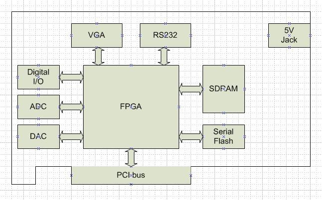

1. เกริ่นนำ
เนื่องจากมีความคิดที่จะทำ peripheral มาต่อกับ FPGA อยู่หลายอย่าง แต่การที่จะต้องมานั่งทำบอร์ด FPGA ใหม่ทุกครั้งก็ดูจะเป็นการเสียเวลาโดยใช่เหตุ ดังนั้นโปรเจคนี้จึงเกิดขึ้นมา
- ต่อกับ FPGA ภายนอก
- เชื่อมต่อ CPU, microcontroller เพื่อขยาย port
แต่สุดท้ายแล้วก็มาลงเอยที่การใช้ FPGA เป็น microcontroller ซะเอง
ส่วนของ CPU ที่จะเอามาต่อนั้น ตอนแรกก็คิดว่าจะใช้ OMAP ของ TI แต่เนื่องจากว่ามันยุ่งยากเกินไปในการที่จะต้องมานั่งทำ BGA routing, high speed signal routing, etc. ก็เลยมาจบที่การใช้ soft core CPU ใน FPGA แทน
2. ที่มาของชื่อ ARIES Board
บอร์ดนี้ออกแบบมาเพื่อรองรับการทำงาน 2 รูปแบบคือ:
- PCI card
- Stand alone (ไม่ใช้ PCI card) โดยใช้ soft core NIOS2
และในอนาคตอาจจะมีการพัฒนาไปสู่ PCI express
3. Specification ของ ARIES Board
- Analog input output
- Digital input output
- Switch input
- VGA (แชร์กับ LED)
- RS232
ส่วนของ Analog I/O, Digital I/O นั้นจะต่อกับ FPGA โดยตรงเพื่อความเร็วในการทำงาน
FPGA: Altera Cyclone II 5000LE
- DIO 16Channel
- ADC 12bit
- DAC 12bit
- SDRAM 256MBit
- Serial flash 4MBit
4. สรุป
โปรเจคนี้จะเน้นไปที่การออกแบบตัวบอร์ดเป็นหลัก ส่วนของการเขียน VHDL/Verilog นั้นจะยังไม่ลงรายละเอียดมากนัก